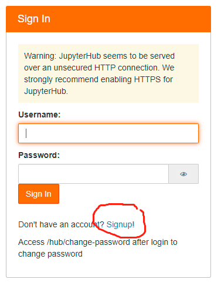
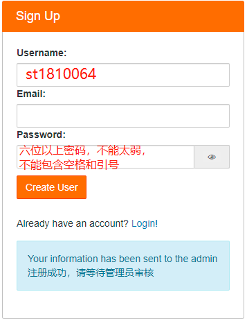
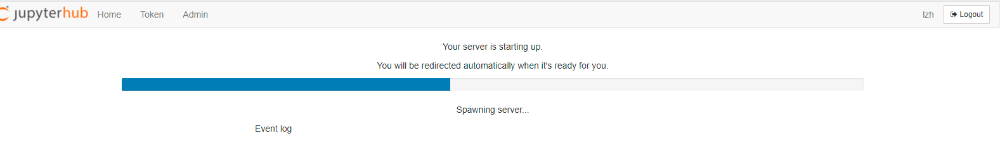
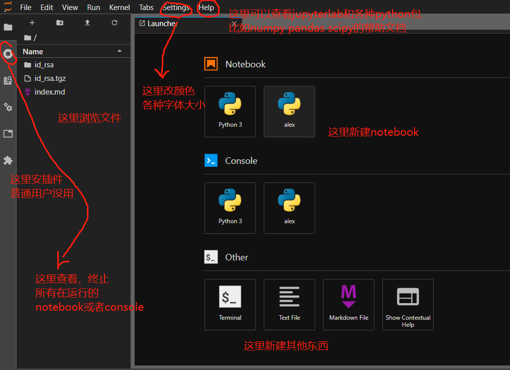
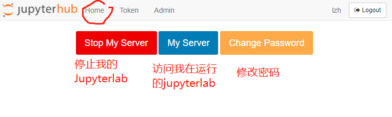

JupyterHub使用说明
我们的主要实验环境为JupyterHub，每位同学可以申请注册单独的账号，使用一个JupyterLab，用notebook和命令行终端完成所有实验，免去大家自行安装软件的麻烦。
链接10.40.13.202:9500，只能在校园网下访问。
注册和登陆账号
新用户第一次访问该链接会转到登陆界面，需要点击“signup”自行注册账号

用户名必须使用"st"加学号，如st1810064，密码必须大于六位且不能使用qwerty等弱密码，不能包含空格或冒号，注册成功时应该会遇到如下提示

此时等待管理员审核即可，如果长时间没有通过，请联系老师和管理员。管理员通过后即可登陆。首次登陆可能会遇到如下界面后出现长时间白屏，请耐心等待，以后登陆会快很多。

JupyterLab
我们使用的Jupyter环境为JupyterLab，比Jupyter Notebook功能更加强大，主要界面说明如下：

使用终端
点击左上角+号，并注意切换conda环境到jupyterhubconda activate jupyterhub
管理JupyterLab和密码
如需要重启JupyterLab或修改自己账号的密码，从jupyterlab界面的菜单栏点击Hub Control Panel访问管理面版，重启账号或修改密码，新密码仍需满足和注册时一样的要求。
注意：这里修改密码会同时修改对应Linux用户的密码，但是ssh时修改Linux用户的密码，Jupyterhub上的密码会保持不变。


更加详细的一些Jupyter教程
官方帮助 https://jupyterlab.readthedocs.io/en/latest/ 仅供参考 https://cloud.tencent.com/developer/news/323834 https://zhuanlan.zhihu.com/p/38612108 https://www.cnblogs.com/zhrb/p/12174167.html
将自己的conda环境(不推荐)添加到jupyterhub
如果你创建了自己的conda环境（虽然非常不建议），请不要单独开启个人jupyterlab（未来可能会因为服务器防火墙无法访问），在jupyterhub中注册你自己conda环境的kernel即可 1. 安装ipykernel
conda install -n 自己的环境名 ipykernel
如果出现http timeout或者Solving environment: failed with initial frozen solve. Retrying with flexible solve.之类的错误，多半是网络问题，请将conda源换为国内的镜像站，具体方法百度“conda换源”
- 激活环境
conda activate jupyterhub
- 将环境写入Notebook的Kernel中
python -m ipykernel install --user --name 自己的环境名 --display-name "要显示在jupyterhub上的名字"
此时再打开jupyterhub应该会出现新的kernel